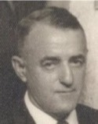
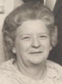

GMBH Tree - Person Sheet
GMBH Tree - Person Sheet


Birth6 Apr 1910, St. Joseph, Huron Co, Ontario, Canada241
BurialPain Court, Chatham-Kent Municipality, Ontario, Canada1416
FatherPhilip L. Denomme (1876-1943)
MotherAnne Durand (1874-1948)
Spouses

BurialPain Court, Chatham-Kent Municipality, Ontario, Canada1419
FatherCharles Laporte (1871-1954)
MotherMarguerite Durand (1875-1951)
Marriage13 Jun 1931, St-Pierre-aux-Bouleaux, St-Joseph, Hay Twp, Huron Co, Ontario, Canada
ChildrenJoseph Laurence (1931-2012)
UNNAMED (Stillborn) (1932-1932)
Charles Philip (1933-2007)
Margaret Ann (1935-2011)
Leo (1941-2000)
Robert R (Bob) (1943-1998)
Cyril (1937-<2013)
Marie-Therese (Terri) (1948-2013)
Cecile A. (1952-1981)